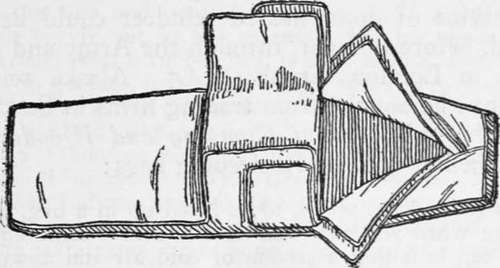

Camp Bedding. Part 3
Description
This section is from the book "Camping And Woodcraft", by Horace Kephart. Also available from Amazon: Camping and Woodcraft.
Camp Bedding. Part 3
Fig. 80. D. T. Abercrombie Sleeping Bag.
It is from lack of attention to these simple and obvious requirements that most designers of sleeping bags have failed. They have turned out contrivances that either were insufferably hot in the early part of the night or confoundedly cold before morning.
The explorer, Anthony Fiala, who has patented an extremely light and warm bag for use in high latitudes (Fig. 81), claims that not only the bag itself but its cover should be porous so as to throw off the bodilv moisture which otherwise condenses around the sleeper and chills him. So he uses plain khaki for a bag cover instead of waterproofed mate^ rial. However, his type of sleeping bag is a snugger " fit " than the average, and so arranged with hood and closing flaps that it ventilates only through the cloth itself. The larger and heavier bags commonly used are roomy enough to provide considerable ventilation from the unconscious wriggling of the sleeper. Besides, the cover, though waterproof, is not impermeable to air, as rubber or oilskin would be.
If several layers of blanketing are used within 3 roomy cover of waterproofed canvas the outer layer will take up what little " sweating " occurs inside the canvas. Such a cover is desirable to protect the occupant from damp ground, from moist air, and from rain when he bivouacs away from camp. It also keeps the bedding dry while en route, as, for example, in a boat or canoe when water is shipped. If the bag is opened out and its lining sunned frequently, as should be done with any sort of bedding, no trouble from condensed moisture will be experienced in ordinary climates.
Fig. 81. Fiala Sleeping Bag.
I have spoken of fur bags. They are much too hot for our climate, except in the high mountains where one must bivouac perhaps in wind and snow. The warmest of all coverings for its weight is a bag made of caribou or reindeer-skin. The hair of this animal is extraordinarily close and thick, and each hair is hollow, like a quill, and contains air (this is true of the whole deer family). Caribou pelts are in their prime when in the summer coat, in August and early September. After this the hair becomes too long and brittle. Skins of young animals should be used, being lighter than those of old ones, although almost as warm, and their hair is less liable to come out under conditions of dampness. They weigh about the same per square foot as raccoon or goat-skins (4 1/2 to 5 ounces, as compared with 6 l/2 for wolf and 7 for black bear, on the average). A bag made from such skins will weigh about twrelve pounds, from the adult caribou about sixteen pounds. Sleeping bags made in Norway from skins of domesticated reindeer could be purchased, before the war, through the Army and Navy stores in London for about £5. Alaska reindeer skins can be bought from trading firms in Seattle.
In the old Book of Camping and Woodcraft I discoursed as follows re sleeping bags:
It is snug, for a while, to be laced up in a bag, but not so snug when you roll over and find that some aperture at the top is letting a stream of cold air run down your spine, and that your weight and cooped-upness prevent you from readjusting the bag to your comfort. Likewise a sleeping bag may be an unpleasant trap to be in when a squall springs up suddenly at night, or the tent catches fire.
I think that one is more likely to catch cold when emerging from a stuffy sleeping bag into the cold air than if he had slept between loose blankets. A waterproof cover without any opening except where your nose sticks out is no more wholesome to sleep in than a rubber boot is wholesome for one's foot. Nor is such a cover of much practical advantage, except underneath. The notion that it is any substitute for a roof overhead, on a rainy night, is a delusion.
Blankets can be wrapped around one more snugly, they do not condense moisture inside, and they can be thrown open instantly in case of alarm. In blankets you can sleep double in cold weather. Taking it all in all, I choose the separate bed tick, pillow bag, poncho, and blanket, rather than the same bulk and weight of any kind of sleeping bag that I have so far experimented with. There may be better bags that I have not tried.
In his excellent book on The Way of the Woods* Dr. Edward Breck replied:
" I have always looked up to Mr. Kephart as a woods* man sans reproche, but I am forced to believe that he has never made fair trial of a good sleeping bag; for, if there is one thing a bag does not do, it is letting in streams of cold air down your spine, and, to me at least it almost goes without saying that a man is wrapped up much more tightly in blankets than in a bag, and hence far more helpless to rearrange his bed without pulling things to pieces. It is just precisely the ability to turn over in comfort that makes me love a sleeping bag, and this springs from its general 1 stay-puttedness.' As for the stuffiness of a bag I confess I have yet to discover it. A proper bag opens down the side and ventilates easily. It is a little more difficult to air out in the morning, but not much. The comparison with a rubber boot is most unjust, and, though harder to get into, it takes no longer to do so than to wrap oneself up properly in blankets. As to getting caught inside if a fire breaks out, I will engage to get outside of mine [a 'Comfort sleeping pocket'] in less than three seconds if necessary. The sleeping bag has come to stay. My Indians have made themselves a couple out of blankets and waterproof canvas. Mr. Kephart asserts that the waterproof cover is no substitute for a roof overhead on a rainy night; and yet I can assure him that I have slept out in mine without a tent many times in hard rain without getting wet in the slightest degree, except when rising. Imagine, if you please, the state I should have been in with blankets only. A lean-to of some kind would have been imperative, and even then misery would have been the result. Of course, spending the night without some kind of shelter is not to be recommended, but my experience shows what the bag is capable of".
Continue to: